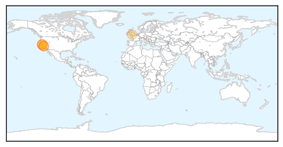
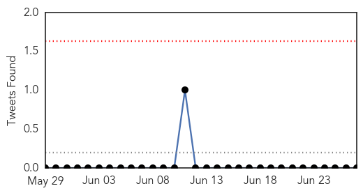

Pertussis
30-Day Web Trend
3 alerts, 0 warnings

30-Day Twitter Trend
0 alerts, 0 warnings

Article Locations
Article Confidences

Top Articles:
- 0.933
- Third baby dies from whooping cough in California
- 0.909
- Whooping cough rates climb in the state, locally
- 0.893
- News Scan for Jun 27, 2014
- 0.851
- Whooping cough cases in San Diego County this year nearly double last year's total
- 0.800
- 3rd California baby dies of whooping cough as epidemic surges
- 0.708
- Whooping cough epidemic in California: More than 1,000 new cases reported
- 0.521
- California's pertussis epidemic escalates, health officials report
Top Tweets:
-
No tweets found for Jun 27, 2014
MERS
30-Day Web Trend
0 alerts, 0 warnings

30-Day Twitter Trend
0 alerts, 0 warnings

Article Locations

Article Confidences
Top Articles:
- 0.999
- Four New Cases Of MERS CoV Infection Reported In Saudi Arabia
- 0.992
- Saudi Arabia reports increase in MERS incidents, deaths
- 0.986
- Saudi Arabia reports MERS case, weighs camel import ban
- 0.975
- Gulf Daily News World News Mers linked to African camels
- 0.971
- Saudi Arabia suspects African camel is source of MERS virus
- 0.901
- Saudi Arabia Plans to Ban Camel Imports
- 0.896
- Exclusive - In virus hunt, Saudi Arabia suspects African camel imports
- 0.880
- In virus hunt, Saudi Arabia suspects African camel imports
- 0.874
- Saudi suspects Africa camels may be Mers source
- 0.868
- Saudi Arabia suspects African camels for MERS virus spread
- 0.863
- Saudi authorities testing imported camels at sea ports
- 0.860
- In virus hunt, Saudi Arabia suspects African camel imports
- 0.859
- EXCLUSIVE-In virus hunt, Saudi Arabia suspects African camel imports
- 0.791
- As Pig Virus Spreads, The Price Of Pork Continues To Rise
Top Tweets:
-
No tweets found for Jun 27, 2014